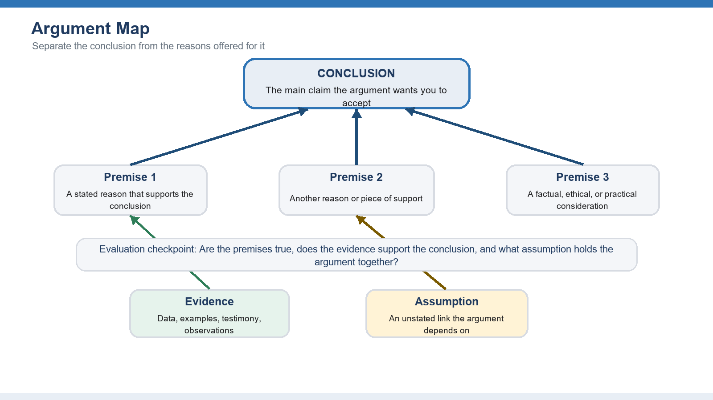
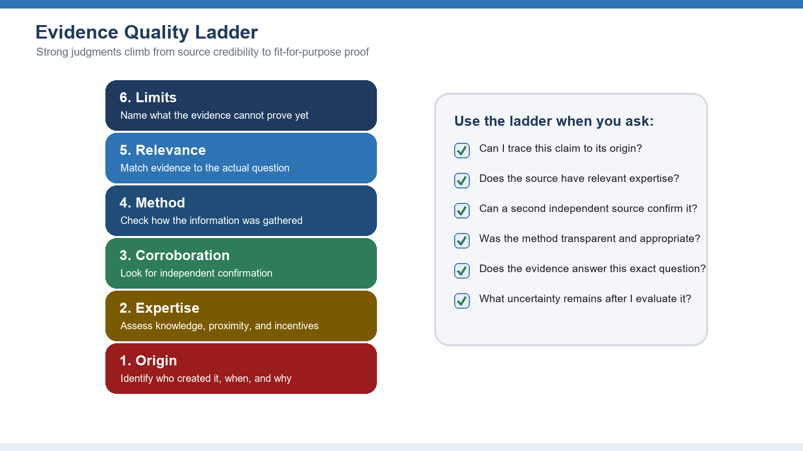
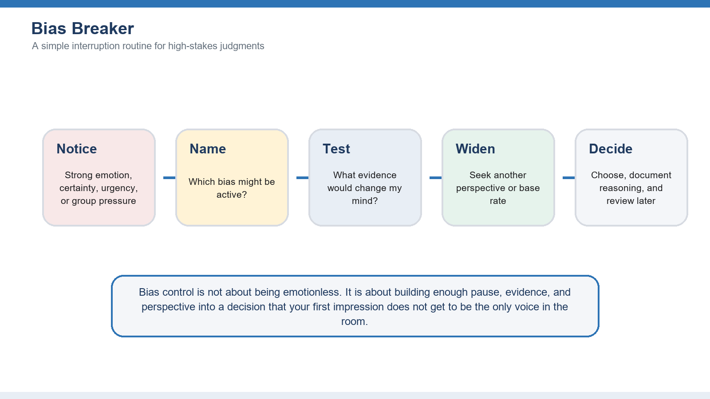
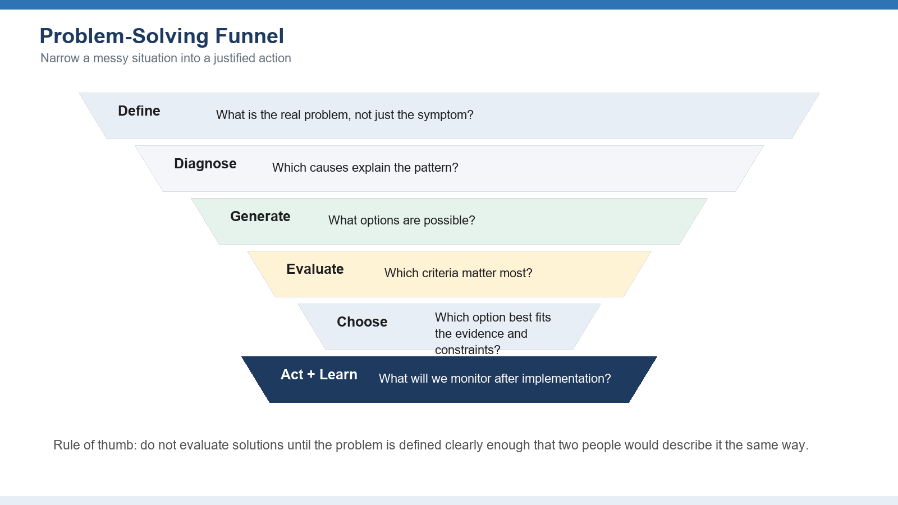

🧠 Critical Thinking
Analyze, Evaluate, and Decide with Confidence
This companion document expands the original critical thinking skill outline into a practical learning guide with explanatory text, examples, diagrams, practice tasks, and review prompts.
Start with the mindset of critical thinking, then learn to analyze arguments, evaluate evidence, control bias, solve problems, and practice the skill repeatedly until it becomes a habit.
1. Foundations of Critical Thinking
Build the mindset and vocabulary learners need before they evaluate complex information.

Key Areas to Master
Definition and importance
Critical thinking is disciplined judgment. It combines curiosity, standards, evidence, logic, and intellectual humility so that a learner can decide what to believe or do. Its value is practical: it helps people avoid snap judgments, explain their reasoning, and make better choices when information is incomplete or contested.
Common misconceptions
Critical thinking is not the same as negativity, debate for its own sake, or distrusting every source. A strong thinker can be skeptical without being cynical, open-minded without being gullible, and decisive without pretending certainty is higher than it is.
Benefits in personal and professional life
In daily life, critical thinking supports better financial choices, healthier relationships, and more careful interpretation of media. At work, it improves planning, risk assessment, problem diagnosis, collaboration, and communication because decisions can be traced back to reasons instead of preferences alone.
The critical thinking mindset
The mindset includes curiosity, patience, fairness, courage, and a willingness to revise a view. Learners practice asking: What do I know? How do I know it? What am I assuming? What would a thoughtful person who disagrees notice?
Common Mistakes to Watch For
- Treating confidence as proof
- Moving to solutions before clarifying the question
- Confusing criticism with careful evaluation
Practice Tasks
- Write one belief you hold strongly and list the evidence that supports it.
- Identify one assumption behind that belief and one piece of evidence that could challenge it.
- Explain the difference between being skeptical and being dismissive.
💬 Discussion — Module 1
A question, a real example, a disagreement about this module? Share it here, respectfully.
Community rule : attack ideas, never people. Cite your sources.
2. Identifying and Analyzing Arguments
Teach learners to see the structure beneath persuasive language.

Key Areas to Master
Premises and conclusions
An argument has a conclusion, which is the claim being supported, and premises, which are the reasons offered in support. Learners should learn signal words such as because, therefore, since, and as a result, but they should also recognize arguments when signal words are absent.
Logical fallacies
Fallacies are patterns of weak reasoning. Examples include ad hominem attacks, straw man arguments, false dilemmas, hasty generalizations, slippery slope claims, and appeals to irrelevant authority. Naming a fallacy is useful only when the learner can explain how the reasoning breaks down.
Argument evaluation
A useful evaluation asks three questions: Are the premises acceptable? Do they support the conclusion? Are there missing assumptions or counterexamples? This separates the emotional force of a message from the quality of its reasoning.
Deductive and inductive reasoning
Deductive reasoning aims for certainty when the premises are true and the form is valid. Inductive reasoning aims for probability, pattern, or best explanation. Most real-world decisions use inductive reasoning, so learners must judge strength, not just correctness.
Common Mistakes to Watch For
- Responding to tone instead of structure
- Rejecting a conclusion because one minor premise is weak
- Assuming every persuasive statement is an argument
Practice Tasks
- Choose a short opinion article and underline the main conclusion.
- List each premise in your own words and draw arrows from reasons to the conclusion.
- Identify one possible objection and decide whether the argument still holds.
💬 Discussion — Module 2
A question, a real example, a disagreement about this module? Share it here, respectfully.
Community rule : attack ideas, never people. Cite your sources.
3. Evaluating Evidence and Sources
Help learners decide how much trust a claim deserves.

Key Areas to Master
Source evaluation
A source should be assessed by authority, accuracy, purpose, currency, and transparency. Learners should ask who created the information, what expertise they have, what incentives are present, whether the claim can be traced, and whether the source separates fact from interpretation.
Bias recognition
All sources have perspectives, priorities, and limits. Bias does not automatically make a source useless, but it affects how the information should be weighed. The key is to identify direction, degree, and relevance of bias.
Evidence quality assessment
Strong evidence is relevant, sufficient, accurate, representative, and obtained through a trustworthy method. A vivid example can clarify a point, but it should not be treated as proof of a general pattern without broader support.
Primary vs. secondary sources
Primary sources provide direct evidence, such as original data, interviews, records, or observations. Secondary sources interpret or summarize primary material. Skilled learners use both, but they know when an interpretation should be checked against the original evidence.
Common Mistakes to Watch For
- Trusting polished presentation more than transparent methods
- Using old information for a fast-changing question
- Treating one example as a pattern
Practice Tasks
- Compare two sources that make the same claim and note where they agree or differ.
- Trace one statistic back to its original source.
- Rate evidence as strong, moderate, weak, or insufficient and explain your rating.
💬 Discussion — Module 3
A question, a real example, a disagreement about this module? Share it here, respectfully.
Community rule : attack ideas, never people. Cite your sources.
4. Recognizing and Overcoming Biases
Give learners practical tools to reduce predictable errors in judgment.

Key Areas to Master
Cognitive biases
Cognitive biases are mental shortcuts that can be helpful in routine situations but misleading when stakes, complexity, or uncertainty are high. They influence what we notice, remember, believe, and ignore.
Confirmation bias
Confirmation bias is the tendency to seek, interpret, and remember information that supports what we already believe. It is powerful because it often feels like careful research while quietly filtering out disconfirming evidence.
Mitigation strategies
Bias is reduced through routines, not willpower alone. Useful strategies include slowing down, naming the possible bias, seeking disconfirming evidence, using checklists, comparing base rates, inviting dissent, and documenting the reason for a decision before outcomes are known.
Perspective-taking
Perspective-taking asks learners to view a situation through another person's goals, constraints, and information. It does not require agreement; it improves the accuracy and fairness of the analysis.
Common Mistakes to Watch For
- Assuming bias only affects other people
- Using one token opposing source and calling the search complete
- Confusing discomfort with poor evidence
Practice Tasks
- Describe a recent decision and identify which bias might have influenced it.
- Find one credible source that challenges your initial view.
- Argue the opposite side of a position for three minutes before returning to your own view.
💬 Discussion — Module 4
A question, a real example, a disagreement about this module? Share it here, respectfully.
Community rule : attack ideas, never people. Cite your sources.
5. Problem-Solving with Critical Thinking
Apply analysis, evidence, and reasoning to messy real-world problems.

Key Areas to Master
Problem definition
A problem statement should name the gap between the current state and the desired state, identify who is affected, and describe the evidence that the problem exists. A weak problem statement jumps directly to a favored solution.
Solution evaluation
Solutions should be compared against explicit criteria such as impact, feasibility, cost, risk, fairness, reversibility, and time. Learners should avoid choosing the first workable option when better alternatives have not been considered.
Decision-making frameworks
Frameworks such as decision matrices, cost-benefit analysis, pros-and-cons lists, root cause tools, and premortems make reasoning visible. The point is not to make decisions mechanical; it is to expose tradeoffs so they can be discussed.
Root cause analysis
Root cause analysis looks beneath visible symptoms. Techniques such as the Five Whys, cause-and-effect diagrams, and process mapping help learners distinguish a trigger from the deeper condition that allows the problem to continue.
Common Mistakes to Watch For
- Solving the symptom instead of the cause
- Choosing criteria after selecting a preferred option
- Ignoring implementation and monitoring
Practice Tasks
- Rewrite a vague problem as a precise current-state/desired-state gap.
- Generate at least three possible solutions before evaluating any one of them.
- Use three criteria to compare options and explain the tradeoff in your final recommendation.
💬 Discussion — Module 5
A question, a real example, a disagreement about this module? Share it here, respectfully.
Community rule : attack ideas, never people. Cite your sources.
6. Practicing Critical Thinking
Turn concepts into durable habits through exercises, feedback, and reflection.

Key Areas to Master
Case studies
Case studies let learners practice with realistic ambiguity. A good case includes incomplete information, competing values, time pressure, and consequences. Learners should identify facts, uncertainties, stakeholders, assumptions, and decision options.
Practical exercises
Exercises should be short enough to repeat and specific enough to give feedback. Examples include argument mapping, source ranking, fallacy spotting, bias journals, decision matrices, and after-action reviews.
Real-world applications
Critical thinking becomes valuable when learners use it outside the classroom: evaluating news, preparing a proposal, resolving a workplace problem, interpreting data, or making a personal decision with long-term consequences.
Continuous improvement
Skill growth requires reflection. Learners should compare predictions with outcomes, record lessons learned, ask for critique, and build personal checklists for recurring decisions.
Common Mistakes to Watch For
- Practicing only abstract definitions
- Avoiding feedback because critique feels personal
- Failing to transfer the skill to real situations
Practice Tasks
- Keep a one-week decision journal with the claim, evidence, assumption, decision, and result.
- Run a short peer review where another learner challenges your reasoning, not your character.
- Choose one critical thinking habit to practice daily for the next month.
💬 Discussion — Module 6
A question, a real example, a disagreement about this module? Share it here, respectfully.
Community rule : attack ideas, never people. Cite your sources.
Capstone Practice Exercises
These exercises integrate all six modules and can be used as assignments, workshop activities, or review tasks at the end of the tutorial.
Argument analysis
Select a short article, speech, advertisement, or workplace proposal. Identify the conclusion, list the premises, mark assumptions, and evaluate whether the evidence justifies the conclusion.
Source evaluation
Choose a current claim and compare at least three sources. Rank each source for authority, transparency, evidence quality, and relevance to the question.
Bias identification
Review a past personal or team decision. Identify where confirmation bias, anchoring, availability bias, or group pressure may have shaped the outcome.
Problem-solving challenge
Use the problem-solving funnel to define a real problem, diagnose likely causes, generate options, compare them with explicit criteria, and recommend one action.
Learner Performance Rubric
Use the rubric to give feedback on the reasoning process, not only on whether the learner agrees with the instructor's conclusion.
References and Resources
- Foundation for Critical Thinking - www.criticalthinking.org
- Bloom's Taxonomy of Critical Thinking Skills
- Paul, R., and Elder, L. (2008). The Miniature Guide to Critical Thinking Concepts and Tools.
- Facione, P. A. (2015). Critical Thinking: What It Is and Why It Counts.
- Brookfield, S. D., and Preskill, S. (2005). Discussion as a Way of Teaching.
- Copyright note: This expanded guide was prepared as a companion to the attached Lojik360 University critical thinking tutorial.